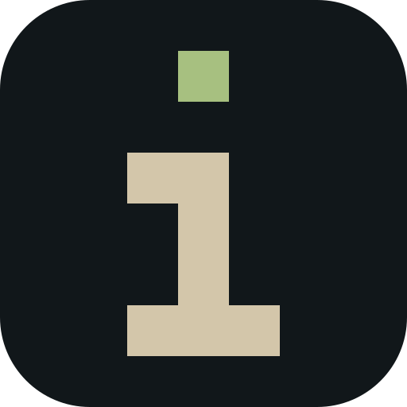

▸infai_
infai runs the models.

infai · engineRun models on your own metal.
A local inference engine and control plane. A profile bundles model + engine + config, so every launch is one keypress.
- llama.cpp and vLLM under one profile shape
- Many models at once, with live telemetry
- Hugging Face imports and hardware-fit checks
▸infaiw_
infaiw puts agents to work.
 infaiw · workflows
infaiw · workflows
An agent harness that works with you, not around you.
A daemon-first harness for real work from your terminal. Interactive sessions today; agentic pipelines and swarms next, all in the same service.
- Sessions on durable, branching timelines
- Sidecar loops with acceptance checks
- You approve what matters, even after closing the window